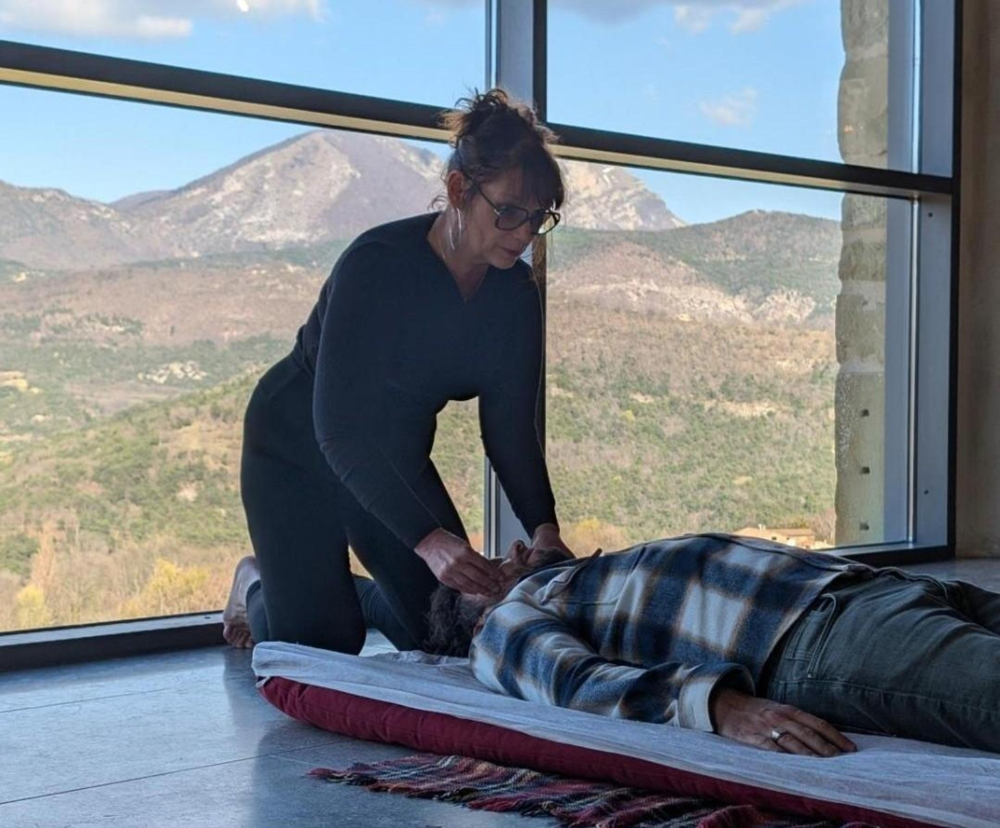

Céline Dion : quand le corps impose un autre rythme — le regard du Shiatsu et de la Médecine Traditionnelle Chinoise
Le parcours de Céline Dion et son combat contre le syndrome de la personne raide ont rendu visible une réalité essentielle : lorsque le corps traverse une épreuve majeure, l'écoute, l'adaptation et l'accompagnement prennent une place centrale.
Je suis Guylaine Juan, praticienne et enseignante en Shiatsu et Médecine Traditionnelle Chinoise depuis plus de 20 ans. Je souhaite ici proposer un regard issu de mon expérience professionnelle, sans établir de diagnostic sur Céline Dion et sans prétendre que le Shiatsu puisse traiter la maladie dont elle souffre.

Le syndrome de la personne raide : une maladie neurologique rare
Céline Dion a révélé en décembre 2022 être atteinte du syndrome de la personne raide, aussi appelé Stiff Person Syndrome.
Cette affection neurologique rare peut notamment provoquer une rigidité musculaire et des spasmes. Son diagnostic et sa prise en charge relèvent de spécialistes médicaux et neurologiques.
Ce que son parcours nous rappelle : écouter le corps
Ce qui m'intéresse ici n'est pas de chercher une explication énergétique à sa maladie. Ce serait aller bien au-delà de ce que nous pouvons affirmer.
En revanche, son parcours remet au premier plan une question que je rencontre depuis des années dans ma pratique : savons-nous réellement écouter le corps avant qu'il ne nous oblige à ralentir ?
Notre société nous apprend souvent à continuer, à tenir, à dépasser la fatigue et à ignorer les signaux corporels. Le Shiatsu propose une démarche différente : développer une qualité de présence et d'écoute du corps.
Le regard de la Médecine Traditionnelle Chinoise
La Médecine Traditionnelle Chinoise observe la personne dans sa globalité : son énergie, son sommeil, son état émotionnel, son rythme de vie, sa respiration et son équilibre général.
Cette lecture énergétique ne remplace jamais un diagnostic médical. Elle constitue une approche complémentaire permettant d'observer autrement les déséquilibres ressentis par une personne.
Le Shiatsu : accompagner, et non promettre de guérir
Le Shiatsu est une pratique manuelle japonaise fondée notamment sur des pressions exercées avec les doigts et les paumes.
Dans ma pratique, je ne cherche pas à opposer médecine conventionnelle et approches complémentaires. Lorsqu'une pathologie est diagnostiquée, le suivi médical reste indispensable.
Le rôle d'une pratique complémentaire doit rester clair : accompagner la personne, jamais se substituer à son médecin.
Qui est Guylaine Juan ?
Je pratique le Shiatsu et la Médecine Traditionnelle Chinoise depuis plus de 20 ans et je les enseigne depuis plus de 10 ans.
J'accompagne également des professionnels du bien-être et de la santé dans l'apprentissage d'une pratique structurée du Shiatsu et de la MTC.
Mon travail a également été présenté dans Femme Actuelle, autour du Shiatsu comme voie de reconnexion au corps.
Apprendre à écouter avant d'agir
C'est aussi le fil conducteur de mon enseignement : comprendre avant d'intervenir, observer avant le geste.
À travers mes formations en Shiatsu Familial et Shiatsu Professionnel, je transmets une méthode structurée destinée à rendre chacun progressivement autonome dans sa compréhension du corps et de l'énergétique traditionnelle chinoise.
Découvrir l'École de Shiatsu & MTC – Guylaine Juan